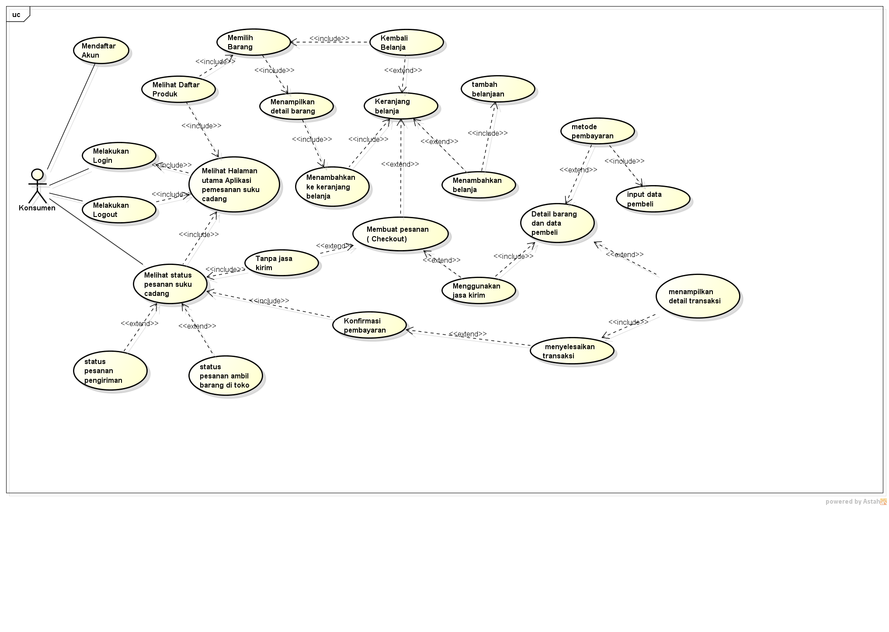

Nim : 2011520004P
Nama : Qori Akbar
Kelompok :TI6J
Hasil saya menyadur pada pertemuan 4 :
1.Usecase diagram digunakan untuk menggambarkan suatu hubungan atau interaksi apa saja yang dilakukan aktor dengan sistem
2.usecase diagram menggambarkan fungsi2 apa saja yang dimiliki sistem
3.Aktor adalah pengguna, aktor ada 2 yaitu aktor aktif dan aktor pasif, Aktor aktif berada pada sisi sebelah kiri dan aktor pasif berada pada sisi sebelah kanan
Aktor aktif adalah aktor yg menggunakan sisitem atau umumnya dialah yg berinteraksi dengan sisitem sedangkan aktor pasif digambarkan jika aktor aktif memerlukan inputan.
4.usecase diagram tidak menjelaskan secara detail tentang penggunaannya namun hanya memberikan gambaran singkat hubungan atara usecase ,aktor dan sistem
5.pada usecase diagram ada 2 istilah yaitu include dan extend yang dimana include artinya disertakan atau suatu usecase lain membutuhkan usecase ini untuk syarat dapat dijalankan
sedangkan extend artinya berkelanjutan/pengembangan atau suatu usecase yang dapat berdiri sendiri meski tanpa usecase yang lain.
6.Usecase diagram juga memiliki generalisasi yang artinya rincian atau pecahan usecase
7.Usecase diagram harus memiliki deskripsi usecase, deskripsi usecase dengan skenario usecase merupakan satu paketan yg buat sebagai tabel deskripsi usecase, skenario usecase
merupakan alur jalannya proses usecase dari sisi aktor dan sistem.
Berikut adalah activity diagram usulannya
Hasil file project asta Download

Dan berikut ini adalah usecase diagram pada pertemuan ini, mungkin usecase diagram ini masih banyak kesalahan
usecase diagram ini saya buat berdasarkan activity diagram usulannya ,mohon maaf bila ada kesalahan dari usecase diagram ini
Disini juga saya membuat deskripsi dari usecase diagramnya mungkin akan banyak kekurangan, mohon maaf pak
Deskripsi dari usecasediagram Download
Hasil file project asta Download

Penutup
kesimpulan yang dapat saya ambil daroi pertemuan ini adalah usecase diagram digunakan untuk menggambarkan suatu hubungan atau interaksi apa saja yang dilakukan aktor dengan sistem
usecase diagram juga menggambarkan fungsi2 apa saja yang dimiliki sistem
Terimakasih sebelumnya pak